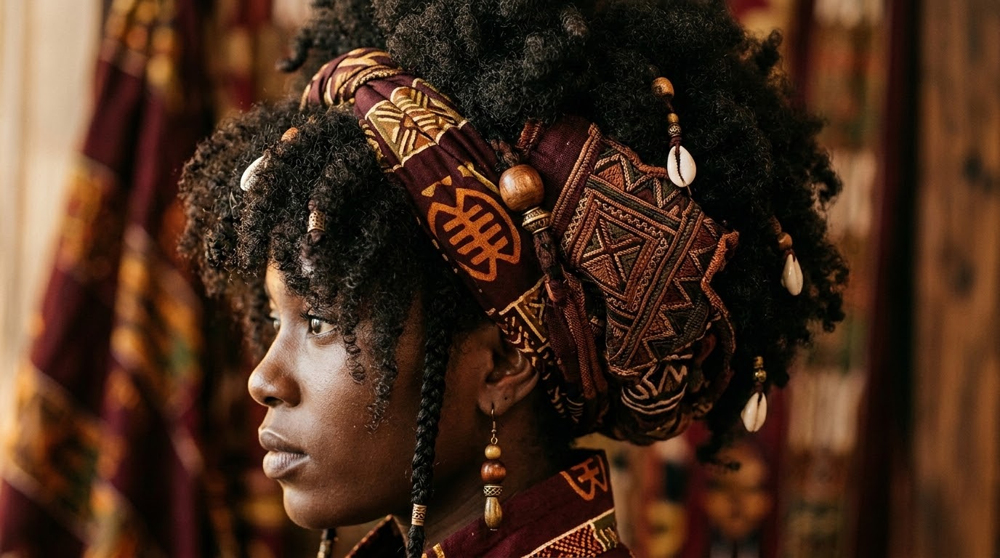
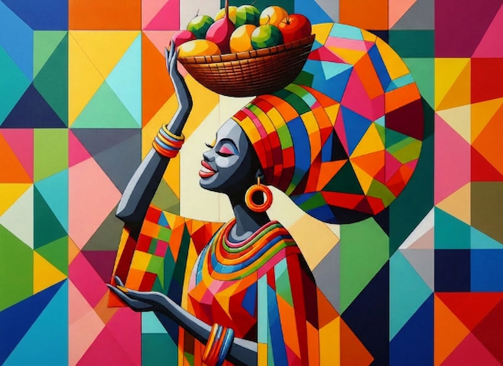
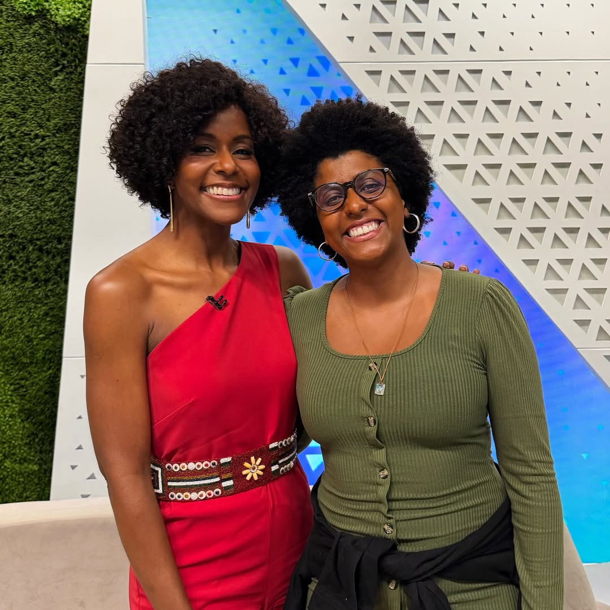

Educação das Relações Étnico-Raciais
GRUPO 03

Estudos da Fiocruz revelam que mulheres negras recebem sistematicamente menos anestesia no parto normal e que a mortalidade de mães pretas é duas vezes maior do que a de brancas.
A superação das desigualdades exige a necessidade de uma abordagem decolonial e antirracista, que reconheça a dignidade e a história da população negra.

A transição capilar é o processo de abandonar procedimentos químicos de alisamento para assumir a textura natural dos fios.
Historicamente, a ideologia do embranquecimento desvalorizou a estética negra, tratando o cabelo crespo como um "problema a ser corrigido".
Assumir o cabelo natural atua como um forte catalisador para a reconstrução da autoimagem e reafirmação identitária.

A experiência inicial frequentemente envolve sentimentos de desconforto e baixa autoestima, refletindo padrões eurocêntricos racistas.
O período de mudança capilar funciona como um despertar. É um momento de questionar práticas de racismo naturalizadas.
Fortalecimento da autoestima. Valorizar características naturais torna-se um ato de resistência e pertencimento cultural.
Em um levantamento histórico do Google BrandLab, revelou-se um marco no Brasil: as buscas por cabelos cacheados e crespos superaram as buscas por cabelos lisos pela primeira vez.
A procura pelo termo "transição capilar" teve um crescimento estrondoso no mesmo período.
Isso comprova a tese do artigo: a transição não é um caso individual de estética, mas sim um forte movimento coletivo de resgate identitário.
O movimento começou em São Paulo e reuniu milhares nas ruas para celebrar a estética negra e protestar contra a estigmatização.
O Caso das Criadoras Pioneiras:
Quando a internet era dominada por padrões eurocêntricos, mulheres como Gabi Oliveira e Nataly Neri usaram o YouTube para falar de estética negra.
Ao ensinarem a cuidar do cabelo crespo, elas criaram as "comunidades de apoio" citadas na pesquisa, ajudando na autoestima coletiva.
O algoritmo frequentemente esconde conteúdos de criadores negros.
Historicamente, a imagem da mulher negra foi associada à precarização. A estética "Afropaty" subverte isso.
Ostentar beleza, cabelos trançados, skincare e bem-estar torna-se um ato de resistência: a afirmação de que elas merecem o luxo e o cuidado negados pela colonização.
"Eu só tô tentando achar a autoestima que roubaram de mim."
Recuperar símbolos culturais e ocupar espaços, físicos e digitais, são formas fundamentais de reconstruir a autoestima, desafiar o sistema e exigir reconhecimento.
Agradecemos a atenção de todos.
Universidade Federal Rural de Pernambuco (UFRPE)